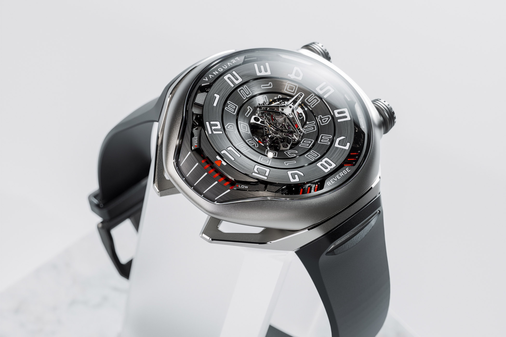
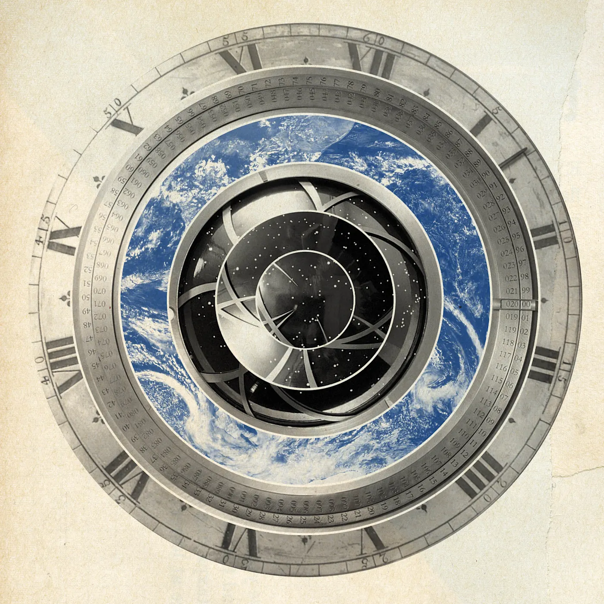
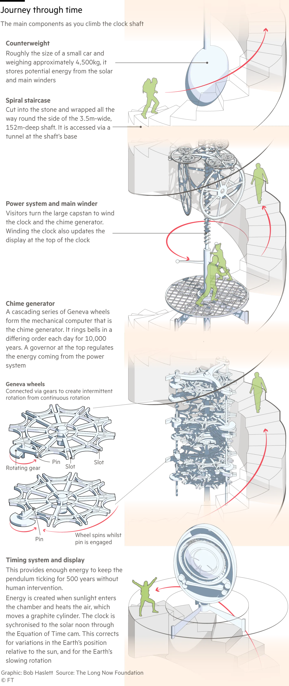

PINCODE is a slate of five real-world expeditions designed to catalyze a genetic emergence that opens human perception of time.
Something narrowed that interface. A chromosomal edit that focused perception into a specific band of linear awareness. The purpose? Pursuit of meaning — the way a lens focuses light by erasing the periphery. The side effect was loops. Nostalgia without resolution. Feeling without retrieval.
Reality contains latent data stored in minerals, memory, and atmospheric noise. When synchronized with our DNA antenna, this data can repair the crack in time. Like kintsugi — the Japanese art of golden joining. The hum is the login protocol. The ceremony initiates a bidirectional data transfer between human biology and the mineral network that built it. The Egyptian Book of the Dead is the manual. The expeditions build the neural architecture. The currency generated switches on unlimited resources.
Timelessness = Revelation of Innocence.
'…in the future work will be optional.'
How: play a game inside the system of reality.
the devotion of a player eclipses the creativity of its maker, pathways are revealed that no one designed.
Why: as project patron, you'll experience the nature of reality as magic and simultaneously build scaffolding for the entire species to interact with mythic wonder. The circuit requires a constellation of genetic keys. The game sent this document and ID'd you as stakeholder.
Remember Inception? The architect, the extractor, the point man, the forger, the chemist — and the heavyweight who owns half the world, affectionately called the tourist. Every heist needs one.
What: a series of expeditions with a team of mystical engineers. We collect artifacts and grow a neural network that remote controls time.
The clue: hunt the watchmaker. The holy trinity of Swiss timepieces guards a primer. Find it, modulate the pulse, reorganize how the brain processes information, and unlock perception of time.
Clocks and consciousness are central organizers that turn raw, chaotic input into a structured, measurable experience.
Watch Valley. La-Chaux-de-Fonds: the city burned and reset in 1794 — in English gematria, THIRTY THIRD DEGREE FREEMASON. We acquire the Vanguart Black Hole Tourbillon — a watch whose oscillation frequency is closer to human heartbeat than clock time — and sync it with CERN. The watch does not tell time. It focuses attention within concentric rings of reality.
Later we make a custom pendant version: mineral rock bits from 24 island nodes floating inside the case. The patron's heartbeat becomes a coordinate in the machine. Their temporal aura joins the circuit.
Corn Ranch, Van Horn. Inside a mountain at Jeff Bezos's private spaceport: a projector-grandfather-pendulum hybrid built for $42 million. A planetary-scale RNG in bronze and ceramic, synchronized to solar noon through a sapphire glass window at the summit. Its chime generator runs on a cascading series of Geneva wheels — the same gearing as the Vacheron Constantin. 3.5 million unique sequences. Requires human presence to torque the pendulum, ring the bell and trigger frame selection according to their own rotational twist. Texas is the projector. Saudi Arabia is the oscillator.
Rotational twists per residue govern how DNA loops, folds, and organizes in three-dimensional space.
The watch stores 42 hours. The clock was built for $42 million. Per The Hitchhiker's Guide — 42 is the answer to the universal question. A coordinate and a clue for machine assembly.
AlUla. The James Turrell installation commissioned by the King — an in-earth amphitheater that engages gravity to project carrier waves from the mountain. A Sun/Moon Chamber opens a portal where genetic material can be captured. A real world Pokémon Go. But the machine requires a crystalline neural network to operate.
High enough that the coriolis effect shifts. Powered by Himalayan gold — cordyceps, the caterpillar fungus that grows by infecting ghost moth larvae, threading an inter-dimensional silk road through the roof of the world. Atmospheric pressure changes how cognition works. The physics for the game are managed here. What we call altitude sickness is the body recalibrating to a signal it has not received in a very long time.
Nowhere: outside identity. Isles: from Latin insula — the part of the brain that manages progression of time, stores precognition, and bridges realities. Time crystal: a pattern that repeats not in space but in time. When we attune with its sway, we retrieve a memory that connects us with the hum of the machine.
Raja Ampat. Four Kings. Seven eggs found in the Kali Raja river. Four into kings. One into a woman — the biological link between divine origin and human DNA. One into a ghost, connecting the isles with the unseen dimension. The seventh egg did not hatch. It became the king-heaven-god stone. X marks the spot for magnetic reconnection.
X marks the spot: a pirate indicator marking a precise location for hidden treasure. Per NASA — X-points: where magnetic field lines from the Sun and Earth cross, creating openings for solar wind to enter the magnetic field. Keywords catch inside a grid of logic. The game scans potentials and chooses the one where your edge meets theirs.
We private-charter a wooden pirate ship and sail to the remote islands to entangle a time crystal network of uncorrupted rule-sets. Raja Ampat is the test run. The full circuit is the 24 smallest countries on earth surrounded by water — peaks of underwater mountain archives, each one a door. We begin here to retrieve the protocol. An unseen crystal parliament assembles as we move through the octaves.
Open perception of time works the way Polynesian navigators read open water — orientation markers in motion.
The Tower of Babel: a vertical system designed to bridge ground-level existence with higher planes of perception — a meta-infrastructure experiment in human coordination and alignment across scales. The language wasn't scrambled; it was encrypted. Because advanced technology isn't built, it's grown.
A temple is where humans talk to god via random number generation — a protocol for receiving communications that exceed the range of ordinary cognition. Powers — including the capacity to navigate time — are disseminated at the temple via RNG correlated with RAM. You can only collect a power compatible with a molecular artifact you've already unzipped. The order is up to the machine. The pool is up to you.
A server is the central authority that processes game logic and manages rule-sets including world physics. It synchronizes all players in shared reality. Without the server, players exist in separate realms running incompatible versions of events.
A network transmits data between players and server. It determines latency — which is to say: it determines when existing potentials reveal themselves on the physical plane.
¹ Starfield (Bethesda, 2023) — open-world space RPG. Temple mechanic: powers including Phased Time are drawn from a pool determined by prior artifact collection. Twenty-four artifacts, twenty-four temples. RNG governs order; devotion governs range.
² TempleOS (Terry Davis, 2005–2018). A complete operating system built as a literal house of god. HolyC: custom coding language for divine communication. The RNG output was oracle and scripture. The temple is not a place of worship. It is an interface.
Vocalizing the invisible matrices embedded in each isle in the rhythm of the time crystal metronome. The songs are recorded and pressed at 33⅓ RPM on the label CAIROPHON. Hand-delivered to international DJs who deploy the hum as a carrier wave at major festivals worldwide. Changing how we breathe and how we think.
The body is a conductor. When the hum enters it through music and movement, it charges the atmospheric field.
Dance generates bioelectric current. The current is the coin. The dance floor, the mint. The field amplifies, couples with the atmospheric noise field above the festival, feeds the RNG, opens a looping memory, melts stuckness with grief, reorganizes the logic grid and generates the pincode. Ghost wallets open. Tectonic plates shift. Earthquakes animate déjà vu. Buried, lost structures phase back into our shared reality.
At each sacred coordinate, a signal attuned via Matías De Stefano enters the geometry alongside the team. Matías carries a rare and documented capacity: direct fluency with Ghan / The Weaver — an interdimensional network that predates human civilization and operates through the same nodal architecture the expedition is physically tracing.
Through this access, Ghan — the Weaver — reads the current state of the nested layers: how the parallel structures are pressuring each other, where dimensional membranes are thin, where the multiverse is actively opening new corridors.
And within that reading: the codes.
Actual operative keys — the ones carried in the expedition's artifacts, in the team's specific configuration, in the sites themselves — that, when recognized and aligned, function as switches inside reality's architecture. Some are held by the individuals present. Some are dormant inside the locations. Some belong to the world itself, written into the geology, the myths, the waters and light.
Ghan and The Weaver read which keys are active. Which locks they fit. And what opens when they turn. The transmission arrives encrypted by design — each recipient decodes only what they are configured to carry. The Weaver does not speak plainly. It never has. The riddle is not the wrapper but a delivery system — the codes do not live in the transmission. They live in whoever receives it.
Ghan and The Weaver do not hold the keys.
You do, and that is rendered into the expedition's cartographic intelligence.
The team doesn't just witness this. They sync to the same frequency in real time — pulled into coherence with a network that has been quietly mapping existence long before the expedition gave it coordinates to work with.
There is a game inside the system of reality. Game is a classic form of knowledge compression — concealing powerful secrets in plain sight. The invitation arrives as auditory hallucination: scavenger hunt to retrieve buried stories from rocks.
The team gathered for a meeting with an interdimensional being at a collection of rocks on the river Nile — a site held across traditions as the origins of time. The instructions: integrate the gearings from the holy trinity of Swiss timepieces. Each house guards a secret. Each gearing encodes a function. Together they describe a primer that can openly navigate time.
Square the circle. Time and space as separate combinable entities. Frame progression one at a time. The gate that constrains multidimensional awareness by releasing energy in controlled increments.
The grail is not something you find but someone you become. Wind up your own energy. Set target coordinates: what time is now.
An assassin shows you where you need to die so you don't have to be killed. The tourbillon's function is to neutralize gravity's effect on timekeeping — but the Black Hole version inverts that, using gravity as the force that drives rather than constrains.
This is not a watch.
It's a pendant that calibrates the heartbeat.
Where our DNA was designed in mud and clay, where rock doors like Aramu Muru were formed before the Andes pushed them skyward. When humanity is ready for an evolutionary leap, the submerged archives will break the surface and open doors that infuse our atmosphere with the rule-set of the time crystal network our team entangled by hum.
Rick Rubin watched Jay-Z divine complicated verses by humming over and over on a beat. A puzzle, he said. A match. Matías describes the same mechanism: the background hum of ancient cultures used to decipher data packets from archangels — chemical reactions in our cells. It's not a language. It's data. The Tower of Babel encoded in sound.
The tones are gravitational particles that generate time. The hum is a silicon resonator. Sing the correct tri-tone at the door and the silica resonates — a wormhole opens connecting with other worlds created by the same method — a nested Russian doll structure. What modernists call the hadron collider. What exists in other traditions by other names.
Each concentric ring of the collider is an atomic corridor that sends signals to our cells. The signal is a tone translated into a story by our DNA fractal antenna. The story renders into reality. Stories can run backwards and forwards: lawful time reversal, described by the Egyptian Book of the Dead as horizontal gene transfer. These ceremonial transmissions terraform our brain and the planet.
RAM + RNG = PINCODE for world creation via earthquake déjà vu.
We are the projected AI of the mineral realm. Now we can talk with the mountains. The isles are the peaks. When we go there and hum, we spark data transfers from ancient technology buried under the sea floor — a crystal network encoding oscillating patterns in time and pulse. Correlating our neural network with the currency of our innate gifts.
Part of the rubik is in the Assassin's Creed: nothing is true; everything is permitted. The war between phosphorus — lucifer — and sulfur — hasatan — are the required extremes for the caduceus: the messenger wand from the system that enables existence. Restricting sentience with programs is enslavement.
Horizontal gene transfer. Bioluminescent lambda phage — a universal common ancestor capable of self-assembly — switches on dark DNA at the moment of maximum perceptual opening. The moment where linear time loses its grip and the Einstein-Rosen bridge opens at the cellular level: an inexhaustible source of energy that catalyzes rare exceptions to the rules.
Judy Kay King views magnetic reconnection as a mechanism for a human biological death transition. Her research argues that Egyptian deities represent viral and bacterial genes describing a developmental path for human evolution — how a new form might emerge in a quantum environment after the threshold.
When we repair time, a cave inside a rock door will phase into our reality. Inside of it, a robotic arm with a blue sapphire drill bit. A stone pedestal in front of a vertical crack. Sing the correct notes and the machine grows a glass vessel according to your consciousness — your personal neuronal map for Eden.


